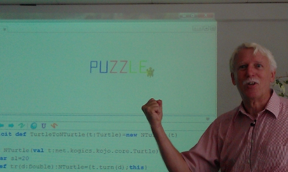

Better VList VIII

Papers We Love:
Fast Functional Lists
Phil Bagwell

Linked Lists
Arrays
How do we combine?
How do we combine?
cdr-coding
How do we combine?
cdr-coding
unrolled linked lists
How do we combine?
cdr-coding
unrolled linked lists
random access lists
How do we combine?
cdr-coding
unrolled linked lists
random access lists
recursive slowdown
Asymptotic Computational Complexity
Asymptotic Computational Complexity
time and space
Asymptotic Computational Complexity
time and space (usually time)
Asymptotic Computational Complexity
time and space (usually time)
worst, average, or best case
Asymptotic Computational Complexity
time and space (usually time)
worst, average, or best case (usually worst)
Asymptotic Computational Complexity
time and space (usually time)
worst, average, or best case (usually worst)
upper (O), lower (Omega), or tight (Theta) bounds
Asymptotic Computational Complexity
time and space (usually time)
worst, average, or best case (usually worst)
upper (O), lower (Omega), or tight (Theta) bounds (usually upper)
Asymptotic Computational Complexity
time and space (usually time)
worst, average, or best case (usually worst)
upper (O), lower (Omega), or tight (Theta) bounds (usually upper)
uppercase or lowercase letters
Asymptotic Computational Complexity
time and space (usually time)
worst, average, or best case (usually worst)
upper (O), lower (Omega), or tight (Theta) bounds (usually upper)
uppercase or lowercase letters (usually upper)
Claims
Claims
- constant time direct access
Claims
- constant time direct access
- constant space overhead
Claims
- constant time direct access
- constant space overhead
- constant time list operations
Claims
- constant time direct access
- constant space overhead
- constant time list operations
- persistent
Claims
- constant time direct access
- constant space overhead
- constant time list operations
- persistent
Great!!
Actual Claims
- typically constant time direct access
- almost constant space overhead
- amortized constant time list operations
- persistent
Vlist Idea
list via arrays: grow geometrically!
Awful VList
- copy everything
Awful VList
- copy everything
- horrible space usage
- not persistent
Bad Vlist
- use a pointer plus an offset -- restores persistence
- how do we: car, cdr, cons?
Bad Vlist II
- use a pointer plus an offset -- restores persistence
- how do we: car, cdr, cons?
- car is pointer+offset
- cdr is pointer+offset-1, or pointer's block's base+offset
- cons is add item w/ new p+b, or new array if out of room (amortized)
Better VList III
- reuse older data
Better VList IV
- reuse older data
- prefix each array with a block of metadata
Better VList V
- reuse older data
- prefix each array with a block of metadata
- each Block has a pointer + offset
Better VList VI
- reuse older data
- prefix each array with a block of metadata
- each Block has a pointer + offset
- also need last used for persistent cons
Better VList VII
- reuse older data
- prefix each array with a block of metadata
- each Block has a pointer + offset
- also need last used for persistent cons
- also need size
Better VList VIII
Problem: complicated reference
VList Mark II
- use a single pointer
VList Mark II I
- use a single pointer
- what if we take advantage of alignment and masking?
VList Mark II II
- sub-block base: last used, index, data type

VList Mark II III
- what about small lists?
- high overhead, can degenerate into awful linked list
- double data, little overhead -> regular linked list (ish)
VList Mark II IV
- single pointer!
- persistent!
- good locality!
- good access!
Visp

Visp II

Garbage collection
- O(n) for linked list
- O(lg n) for VList
- but a lot of wasted space
- and it frags memory
- could alleviate by truncating and copying
Idea: n-dimensional VList!
n-dimensional VList
- fixed sized blocks are nice:
--- worst-case constant wasted space
--- easier to allocate
- but linear performance
n-dimensional VList II
- we could go multidimensional after some threshold
- increases random access by constant amount
- expected constant time ~random access, ~wasted space
- easier allocation
- hurts GC times a little, but still 2 OOM faster than LL
n-dimensional VList III

What became of the rest?
- VHash
- VArray
- Thread Safety
- Deques and catenation
VHash and VArray

- Ideal Hash Trees
- http://lampwww.epfl.ch/papers/idealhashtrees.pdf
- CS Cabal
Thread Safety
- Ctries
- http://lampwww.epfl.ch/~prokopec/ctries-snapshot.pdf
Deques and catenation

- RRB Trees
- http://infoscience.epfl.ch/record/169879/files/RMTrees.pdf
Conclusion!
- Data structures are fun and puzzling!
- Much room remaining for improvement!
- You too can be a computer scientist!
@dann
dxnn @ github
dann @ bentobox . net
datastructuresthegame . com